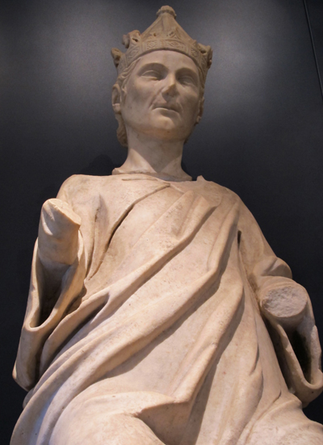

La mattina del 25 gennaio 1313, Enrico VII di Lussemburgo invia di nascosto 600 tra cavalieri e fanti ad attaccare la città di Siena.
Arrivarono fino a Porta Camollia e "appresso l'arboro di san Francesco", a Cellole, Fagnano, Monastero e Costalpino. Nella scorreria "fecero molto danno".
I Signori Nove "sonaro la campana ad allarme, il popolo di Siena fu ad arme".
Dopo le prime schermaglie e i primi successi, i senesi si trovano in grave difficoltà, essendo male organizzati e senza un capitano che li guidasse. In loro soccorso però arrivò la cavalleria.
Nella battaglia ci furono morti e feriti da entrambe le parti ma furono i soldati dell'Imperatore a battere in ritirata. Dopo i fatti senesi Enrico VII di Lussemburgo si ammala gravemente e muore a Buonconvento il 24 agosto dello stesso 1313.

lapide apposta sulla facciata comunale di Buonconvento
in occasione delle celebrazioni dantesche del 1921
Con la morte dell'imperatore Enrico VII di Lussemburgo, nel 1313, muoiono anche le speranze di rinascita di Pisa, prostrata dalla sconfitta della Meloria alcuni decenni prima.
Ai pisani non resta che accogliere trionfalmente le spoglie dell'imperatore nella propria cattedrale e si chiama uno dei più grandi scultori dell'epoca, Tino di Camaino allievo di Giovanni Pisano, per celebrare con la sua arte la memoria di Arrigo (come lo chiamavano i pisani e anche Dante nella Divina Commedia).

Statua di Arrigo VII dal suo monumento funebre
Per la terza volta dalla sua morte il sarcofago di Arrigo è stato aperto per studiarne il contenuto.
All'interno sono stati trovati un globo, lo scettro e la corona imperiali in argento dorato oltre ad un tessuto di seta, con fasce rosa e azzurre lungo tre metri, che è servito per avvolgere i resti imperiali e conservato perfettamente.
Il mistero sembra risolto: l'imperatore non è stato avvelenato e quindi è morto di malattia.
Queste rivelazioni sicuramente deluderanno molti ma finalmente pongono la parola fine a secoli di sospetti e di dibattiti.

 ACCADDE OGGI
ACCADDE OGGI